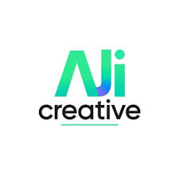

Mes Stages
Rapports de stage réalisés durant mon parcours BTS SIO
Stage — Assistant DSI
Maintenance réseau et support technique au lycée Charlemagne à Paris. Gestion de l'infrastructure réseau, assistance aux utilisateurs et maintenance du parc informatique.
Réseau
Support
Voir le rapport

Stage — Assistant Informaticien
Réparation, vente et conseil sur du matériel informatique. Diagnostic de pannes, assemblage et conseil clientèle sur les solutions matérielles.
Matériel
Diagnostic
Voir le rapport

Stage — Assistant Développeur
Découverte du développement web et gestion d'un projet applicatif. Participation à la conception et au développement de solutions web.
Web
Développement
Voir le rapport

Stage — Technicien Informatique
Maintenance des infrastructures réseau et systèmes au lycée Simone Signoret. Administration serveurs, gestion Active Directory et support utilisateurs.
Infrastructure
Admin Sys
Voir le rapport